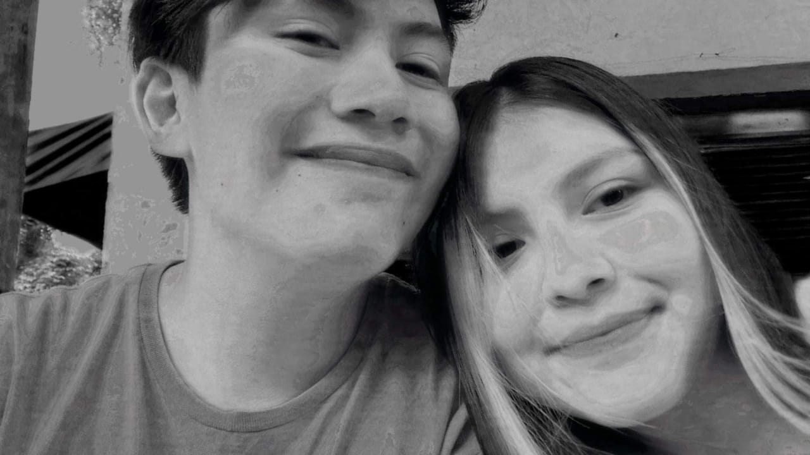
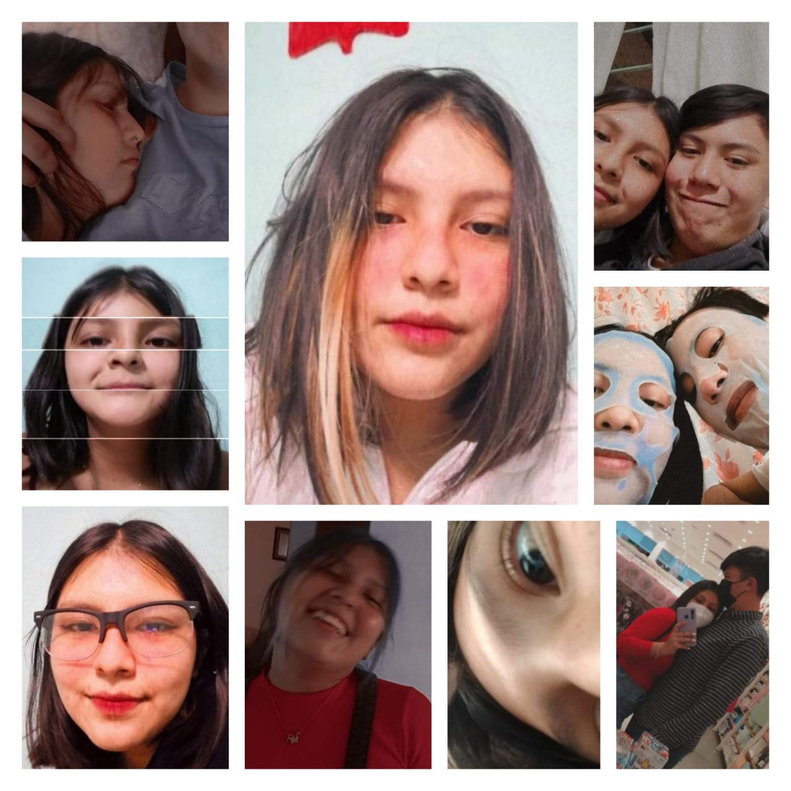
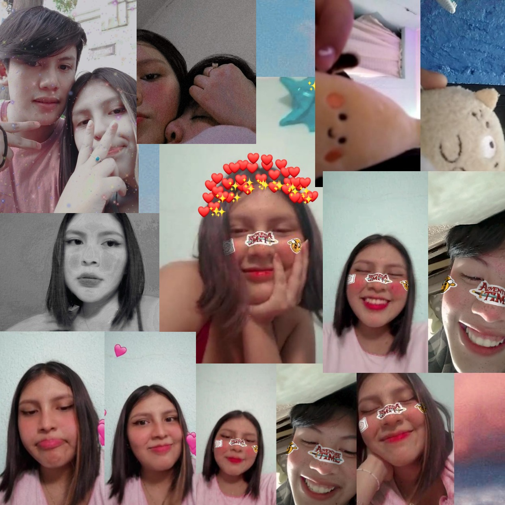
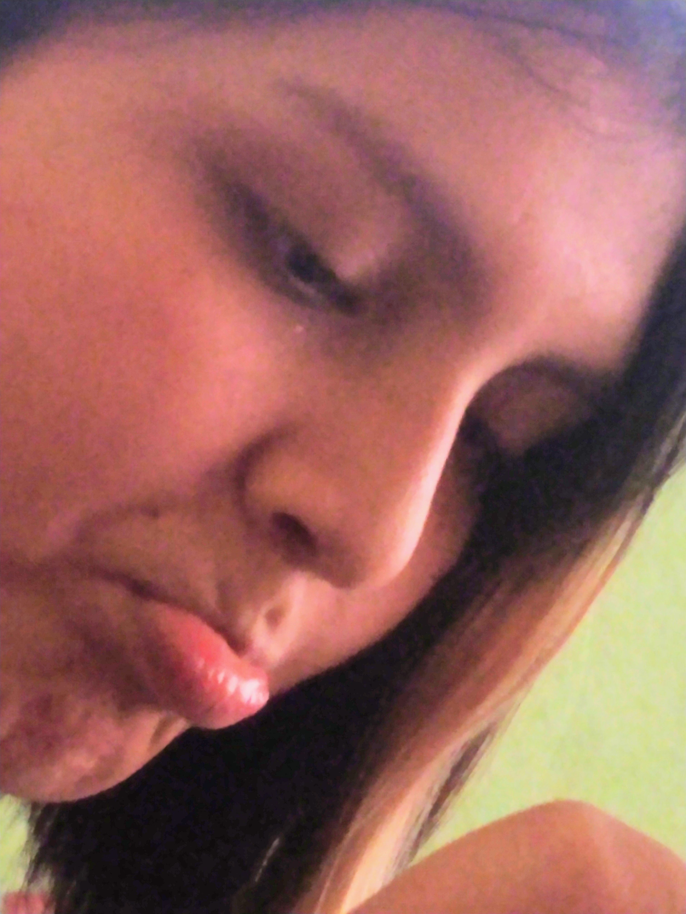

Mi corazón se comenzo a interesar más por ti, y creyendo que nunca me harias caso, trate de hacerte sentir algo más que amistad por mi. Una de las mejores decisiones que he tenido en la vida, siendo sincero, LA MEJOR DESICIOOON DE MI VIIIIDAAAA.
Comence a hablarte, muy timido, dando algunas señales de que me gustabas, mientras tu me presumias que tenias muchsimos ligues JAJAJA. Mandando corazones, diciendo que te queria y tratando de ser lindo contigo, entonces nos organizamos y decidimos volvernos a ver despues de un tiempo.
Pasamos un dia bastante divertido, tratando de no hacerte de escapar por mi forma de ser JAJA. Fue uun dia especial para mi, pero cometi el error de decirte que me empecé a enamorar de ti, entonces, te confundi. Termine alejandote poco a poco, hasta ese punto de no hablarnos más :(.
Después de que el maldito Messenger hiciera de las suyas (Lo odio >:(( ), te volvi a mandar mensaje aun con esperanzas de recibir una respuesta tuya :´). Entonces, me respondiste!!! Y me puse super FELIIIII!!!!. Empezamos a hablar cada dia más y más, contando cosas de nuestro dia a dia y diciendo una que otra cosa linda (yo decia el 90% de las cosas bonitas), poniendonos al corriente de nuestras vidas y hablando, una que otra vez de volver vernos :)). Uno de los recuerdos mas claros que tengo de ese tiempo fue una noche donde nos compartimos nuestras canciones favoritas <3.
Las primeras canciones
El dia 5 de Febrero de 2021, empezo una historia que no acabara, un dia con helados, risas, dos adolescentes distraidos, una declaración inusual y un beso muy valioso UwU. Desde ese dia mi vida cambio y aunque hay dias grises se tornan cada vez mas llenos de luz a tu lado y estoy seguro que algun dia desapareceran :).
Desde ese momento hemos estado juntos, compartiendo demasiadas historias, aunque solo hayan pasado 7 meses. Tu voz, tu piel, tu aroma, tus manos, tu presencia, todo se ha vuelto indispensable para mi, porque ya eres mi oxigeno, alimento para mi alma, que me haces florecer y alegras mi ser. Todo lo que deseo es vivir una vida plena y llena de amor a tu lado.
Desde entonces he caido rendido ante ti, he vivido los mejores casi 8 mese de toda mi vida, todo lo que has hecho por mi, cada palabra, cada abrazo, minuto, risa, todas las llamadas que hemos hecho, las tonterias que decimos, los momentos cursis, y los sobrenombres tiernos; todo eso es lo que me mantiene vivo, tu me mantienes vivo, porque he caido completamente en tus brazos y mi corazon, mente, alma y cuerpo seran tuyos por siempre, no quiero a nadie más que no seas tu 🥺.

Todos los momentos a tu lado son muy especiales para mi y todo lo que haces por mi te lo agardezco muchisimo. El autito que me regalaste es una de las cosas mas valiosas que tengo en la actualidad.💗
Una cosa que amo es hablar contigo, porque cuando nos entendemos todo a mi aldrededor se pierde, es como si estuviera en el espacio solo contigo, me pierdo en el tiempo y mi ojos no pueden dejar de ver todo el brillo que saca tu ser.😊💖
Al igual que las videollamadas contigo, poder hablar de lo que sea contigo es lo más hermoso.😚💖
Bueno aqui te dejare una lista de las canciones de tu nombre, te amo princesa corozancito💖.
Muriendo Sin Ti
Por favor!!!. Ya fue mucho castigo, ya necesito abrazarte y darte muchos besitos ðŸ˜ðŸ˜ðŸ˜ðŸ˜ðŸ˜ðŸ˜
REEEEEGREEEEESAAAA A MIIIIIIS BRAAAAAZOOOOOS POOOOOOR FAAAAAA ;((
Bueno, empece a pensar que mas poner aqui para mi Ponyo hermosa. Y se me ocurrio poner un poema (dos poemas), uno muy bonito que encontre y tratare de escribir uno jajaja :D.
Bueno, trate de escribir lo mas abstracto y sincero que pude, hacer que rimara fue dificÃl :(.
Pero sale totalmente de mi corazón, te amo -3-.
Ella
"La calides del sol me pega en la acera
Pensando un poco en la lejania de tu voz
Comienza a soplar el viento
y mi mente se pierde en el sonido
Espero un minuto más
El tiempo me hace odiar
Cada momento en que no estas
Enredando mis brazos en tu alma
Ella sale de una puerta a otro lugar
Y su mirada me hace tranquilizar
Tu voz me comienza a llamar
No creo amar igual a nadie jamas
Como a ti te amo
Por 100 años y un dia más"

Te extraño mucho sinceramente, en serio, ahorita escribiendo esto se me hizo un agujero en el corazoncito y me siento bastante triste por no poder abrazar al amor de mi vida o poder hacer algo contigo, jugar, hablar o cocinar.😞

Bueno, despues de estar haciendo esto para una persona tan especial para mi, me siento muy afortunado de tenerte a mi lado, tu eres la mas especial en mi vida.
Lo ultimo que te tengo que decir, bueno mas bien pedir es algo muy dificil de pedir y como apenas se lo basico, no se como salga, pero espero que sirva de perdida.😋
¿Te quieres casar conmigo?🥺
Bueno eso es todo amor, espero que te haya gustado esta pequeña pagina toda mal hecha, pero aunque este mal hecho la hice con todo mi amor, para ti.😊
Recuerdame cada que veas esta pagina. 💗😚💗
Por ultimo, te dejare una ultima canción princesa. 💖😊😚